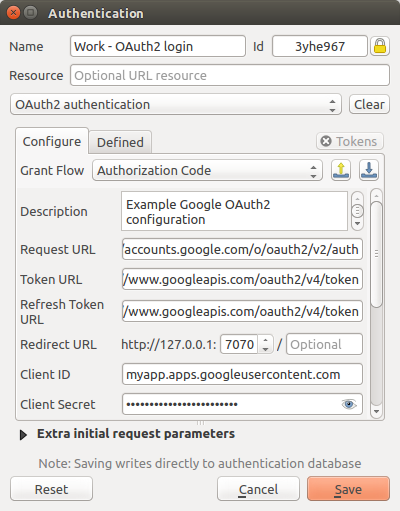
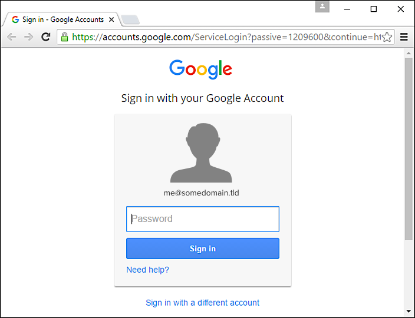
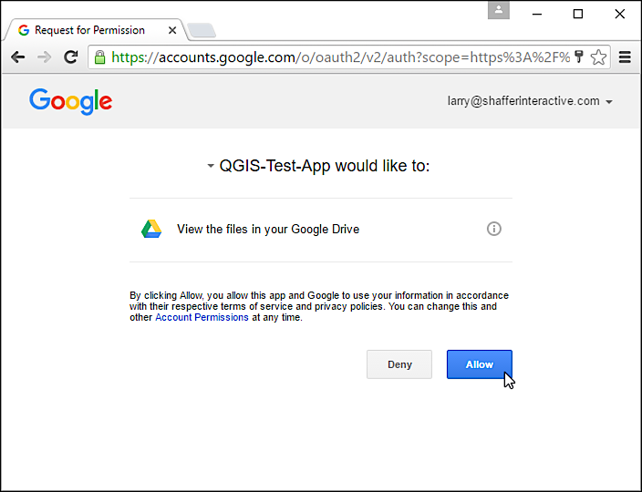
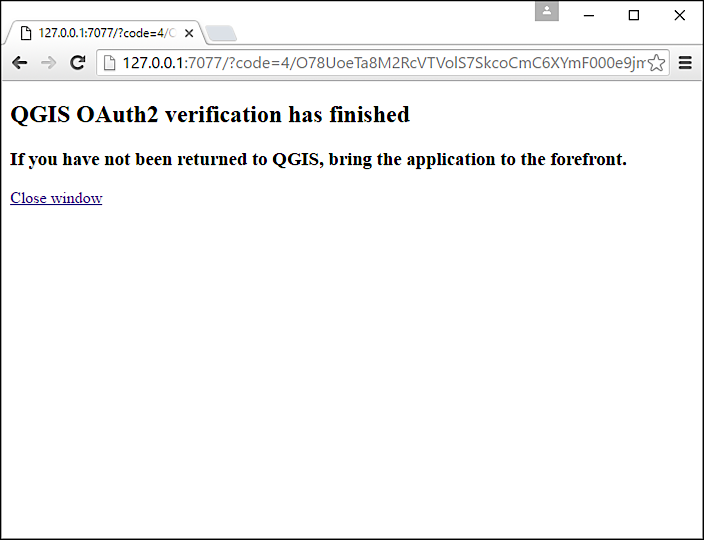

User Authentication Workflows¶
Figure Authentication usage 1
Generic user workflow
HTTP(S) authentication¶
One of the most common resource connections is via HTTP(S), e.g. web mapping servers, and authentication method plugins often work for these types of connections. Method plugins have access to the HTTP request object and can manipulate both the request as well as its headers. This allows for many forms of internet-based authentication. When connecting via HTTP(S) using the standard username/password authentication method will attempt HTTP BASIC authentication upon connection.
Figure HTTP(S) authentication 1
Configuring a WMS connection for HTTP BASIC
Database authentication¶
Connections to database resources are generally stored as key=value pairs, which will expose usernames and (optionally) passwords, if not using an authentication configuration. When configuring with the new auth system, the key=value will be an abstracted representation of the credentials, e.g. authfg=81t21b9
Figure Database Authentication 1
Configuring a Postgres SSL-with-PKI connection
OAuth 2.0 workflows¶
The OAuth2 authentication method plugin adds OAuth 2.0 client support to QGIS for the following OAuth 2.0 grant flows (with OAuth 2.0 specification section links):
- Authorization Code (section 4.1)
- Implicit (section 4.2)
- Resource Owner Password Credentials (section 4.3)
- Refresh Token (section 1.5)
Note
The Client Credentials grant flow (section 4.4) is currently unsupported. Once supported it will be useful for the unattended (machine-to-machine) flow needed by QGIS Server when serving projects that contain layers with OAuth2-protected data sources.
Development note: The plugin is built upon the open-source o2 library, which provides support for the OAuth2 standard in Qt applications. Any work towards further grant support or additional features for the OAuth2 plugin should consider extending that library’s functionality as a starting point, if applicable.
OAuth 2.0 grant flows overview¶
OAuth2 grant flows rely on the interaction between different “actors”, it is important do define them precisely in order to understand how the different grant flows work.
- Resource owner: is the person (generally you) that owns the resource that needs to be accessed
- Resource server: server hosting protected data (for example, an OGC server hosting your geodata or Google hosting your profile)
- Client: application requesting access to the Resource server (this is normally a web server but in the context of this plugin it is the QGIS application)
- Authorization server: the server issuing access tokens to the Client, this is often the same server as the Resource server
OAuth2 provides different grant flows to fulfill the needs of different scenarios, they differentiate especially regarding the trust that can be given to the involved actors.
If you require a user’s permission to access resources, i.e., the user is the Access token owner, the grant flow to use will depend on the Client type and if either you trust it enough to handle the end user’s authorization credentials (first party or trusted client) or not (third party client). See What grant flow should you use figure to decide which is the best grant flow for your case.
What grant flow should you use
Note
Machine owned Access token and Web app client type where not implement yet. That is why they are faded in the above figure.
We are going to examine the grant flows implemented by the OAuth2 plugin in the next sub-chapters.
Authorization code grant flow¶
This is the most complex grant flow, it is typically used when the client (i.e. QGIS) needs to access a protected API by using an authorization code released by the authorization server.
This flow allows the client to retrieve a long-lived access token and an optional refresh token that can be used to obtain a new access token when it expires.
This grant flow requires user (resource owner) interaction through a web browser and the access token is never made visible to the browser or to the resource owner but only to the client.
An example might help to clarify this flow.
Note
Please note that in all the real-world implementation that use the well known OAuth2 authorization servers (Google, Twitter, Github etc.) the client is a web application running on a web server, while the resource server is the API provided by the well knows OAuth2 providers.
This workflow assumes that the client (QGIS) needs to be registered as an application and have a client ID (and usually a client secret).
When QGIS first try to access the resource server (for instance by issuing a GetCapabilities request), the OAuth2 authorization grant flow dance begins:
- the client is redirected to the authorization server asking for an authorization code request;
- the authorization server asks the resource owner to log in and authorize the request (this happens inside a web browser);
- if the resource owner authorizes the request, the client receives the authorization code;
- the client exchange the authorization code with an access token calling the authorization server;
- finally the client has an access token that can use to call the resource server API.
Authorization code grant flow example
Implicit grant flow¶
This grant flow is normally used when the client is running in a web browser (QGIS in our scenario), the refresh token is not supported by this grant flow.
Let’s look at an example.
When QGIS first try to access the OGC server (for instance by issuing a GetCapabilities request), the OAuth2 implicit grant flow dance begins:
- the client is redirected to the authorization server asking for an access token;
- the authorization server asks the resource owner to log in and authorize the request (this happens inside a web browser);
- if the resource owner authorizes the request, the client receives the access token;
- finally the client has an access token that can use to call the resource server API.
Implicit grant flow example
Resource owner passsword credentials grant flow¶
This grant flow is normally used when the client and the authorization server have absolute mutual trust: the resource owner credentials are given to the client and then to the authorization server.
Let’s look at an example.
When QGIS first try to access the OGC server (for instance by issuing a GetCapabilities request), the OAuth2 password credentials grant flow dance begins:
- the client knows the resource owner credentials (username and password) and calls the authorization server asking for an access token;
- if the credentials are valid and the user is authorized, the client receives an access token and a refresh token;
- finally the client has an access token that can use to call the resource server API.
Resource owner passsword credentials grant flow example
Default Web browser¶
OAuth 2.0, as a protocol, does not manage user authentication, which can be done by a variety of identity providers. Accessing those providers is generally done via URLs in a Web browser or via a published API. The OAuth2 plugin tries to be agnostic to the differences between such providers; and, as such does not use any particular API, instead relying upon the user’s default Web browser, OAuth 2.0 standards and flexible configuration.
Note
While QGIS, being a Qt-based application, can easily support its own Web browser within a window of the application for user authentication, the OAuth2 plugin relies upon the user’s default Web browser because:
- Maintaining a secure Web browser, at the level of other browser projects, within QGIS would be arduous.
- Current user authentication state in the user’s browser, e.g. Single Sign On, offering fewer steps for some grant flows, would not be preserved.
- The OAuth 2.0 specification for native applications does not recommend the use of embedded Web browsers, aka user-agents, when the user’s default is available (OAuth 2.0 for Native Apps draft).
Example OAuth 2.0 Authorization Code grant flow QGIS <–> Web browser session¶
User configures a connection to a protected resource with OAuth2 plugin.
User attempts initial connection to OAuth2-protected resource and is asked to log in (authenticate).
User authorizes the application for access to a particular resource.
User has verified authorization code request for application.
Note
Due to a limitation on the Windows platform, the QGIS application may not automatically come to the forefront after verification.
Also, the Close window link may not work in some browsers if they restrict the closing of some tabs/windows by Javascript.
OAuth2 plugin requests (in the background) an access token for the application using the authorization code. Upon success, the access token is cached and used in subsequent requests to the protected resource.
Local reply server¶
For grant flows that require a redirect URL to communicate token request responses to QGIS, the plugin temporarily spawns a local HTTP server, on a user-defined port, to listen for redirect URL requests from the user’s default Web browser.
On OS platforms with application firewalls, this local server may trigger a user prompt to authorize connections to the QGIS application.
Example of Windows 10 firewall configuration
Prompt to allow connections to QGIS executable
Note
If needed, you can revert or adjust this firewall configuration by accessing the Advanced settings in the OS Control Panel.
Access firewall configuration
Executable’s configuration (qgis-bin)
On OS platforms with port-based firewalls, you will need to allow access to the ports or port ranges set in your OAuth2 configurations.
Resource access tokens¶
By default, access tokens are cached by the OAuth2 plugin only for the duration of the QGIS work session, then removed upon quitting QGIS. However, some access tokens may expire before QGIS is quit. In this case, the plugin will attempt a refresh of the token, if possible, in the background. Failing this, the user will be prompted to restart the appropriate grant flow.
If you have set some OAuth2 plugin configurations to persist the token across QGIS launches, the cached tokens are saved to individual files in the following directory:
- on
 and
and  in ~/.qgis2/oauth2-cache
in ~/.qgis2/oauth2-cache - on
 in C:\Users\user\.qgis2\oauth2-cache
in C:\Users\user\.qgis2\oauth2-cache
In situations where the cached token needs to be manually deleted, the user can click the [ tokens] button within the OAuth2 configuration GUI. If the button is not active, then no tokens have been cached.
{kind=link}
Configuring OAuth 2.0 connections¶
The configuration GUI for the OAuth2 plugin has sections divided into tabs: Defined (default) and Configure. This allows for maximum flexibility for choosing from well-known or predefined enterprise identity providers as well as providers that require non-standard or extended configurations.
Note
While a configuration can only be Defined or Custom, the configurable query parameter pairs (at bottom of GUI) can be applied to either.
Defined OAuth 2.0 configuration¶
The Defined tab allows for selecting predefined configurations for particular identity providers, e.g. Google, etc, and grant flows. This is the default tab because OAuth2 authentication generally occurs within the user’s browser, i.e. selecting a predefined identity provider configuration is quicker if there are configuration files found during startup of QGIS or from a user-specified folder.
OAuth2 default configuration
Upon startup, the OAuth2 plugin will look in the following directories for configuration files:
oauth2_configs inside of QGIS’s Package Data Path, which you can locate by launching QGIS and reviewing output in the Log Messages Panel under the General tab.
and...
on
and in ~/.qgis3/oauth2_configson
in C:\Users\user\.qgis3\oauth2_configs
In addition to the standard directories to search, you can add an extra directory within the GUI.
Loaded predefined configurations
Deploying defined OAuth2 configuration files¶
Predefined OAuth2 configurations are simple JSON-formatted files, with a single configuration per file. This allows configurations to be swapped out via filesystem tools without affecting other configurations. Also, any syntax error within one configuration will not keep all configurations files from being loaded.
Warning
Not all parts of an OAuth 2.0 grant flow make sense to have in a predefined configuration that will be shared amongst users. For example, the username/password of the Resource Owner Password Credentials grant flow should not be saved within a configuration, as this needs to change per user.
Note
Instead of creating predefined OAuth2 configuration files by hand, consider using the Custom OAuth 2.0 configuration part of the GUI its export function, which will generate proper JSON files for deployment.
Example OAuth2 JSON-formatted configuration file¶
{
"accessMethod" : 0,
"apiKey" : "",
"clientId" : "myapp.apps.googleusercontent.com",
"clientSecret" : "bh02HkMPpfHkd7DMuTJopN06",
"configType" : 1,
"description" : "Example Google OAuth2 configuration",
"grantFlow" : 0,
"id" : "nchu3w6",
"name" : "Work - OAuth2 login",
"objectName": "",
"password" : "",
"persistToken" : true,
"queryPairs" : {
"somekey" : "somevalue",
"somekey2" : "somevalue2"
},
"redirectPort" : 7077,
"redirectUrl" : "",
"refreshTokenUrl" : "https://www.googleapis.com/oauth2/v4/token",
"requestTimeout" : 30,
"requestUrl" : "https://accounts.google.com/o/oauth2/v2/auth",
"scope" : "https://www.googleapis.com/auth/drive.readonly",
"state" : "",
"tokenUrl" : "https://www.googleapis.com/oauth2/v4/token",
"username" : "",
"version" : 1
}
Refer to the next section for descriptions of similarly named keys and their possible values. There are several items in the configuration that are not exposed in the GUI and are described here:
- configType (required): 0 = Defined; 1 = Custom (this should be 1 if exported from the GUI).
- id (required): A unique id, used to identify the configuration by the plugin (if using the Custom configuration GUI’s export function, this will be auto-generated).
- version (required): This reflects the version of the JSON keys/values supported by the plugin.
Note
It is recommended to use the Custom configuration GUI’s export function, then edit the resulting file, as some values can be cumbersome to determine.
Custom OAuth 2.0 configuration¶
The Configure tab allows you to fully customize the configuration of the supported grant flows. Configurations are saved in the authentication system’s database (not JSON-formatted files), making them as portable as other authentication method configurations.
Import/Export¶
Once a configuration is edited and tested, you can use the export configuration button to output a JSON-formatted file for use as a predefined OAuth2 configuration. Similarly, you can use the import configuration button to load an existing OAuth2 JSON-formatted file with the .json extension.
{kind=link}
{kind=link}
Grant flows¶
Each grant flow has slightly different required and optional fields, as well as some non-applicable fields. The GUI with show/hide the fields relative to the selected grant flow.
Here are the fields for each grant flow:
Authorization Code grant flow
Implicit grant flow
Resource Owner Password Credentials grant flow
GUI field descriptions¶
- Grant flow: The selected OAuth 2.0 grant flow.
- Description: Short description of the configuration (useful for when listed as a predefined OAuth2 configuration file read from the file system).
- Request URL: Where to send Authorization Code and Implicit initial requests.
- Token URL: Where to send a request for the access token.
- Refresh Token URL: Where to send request when attempting to refresh a token.
- Redirect URL: Where to redirect the user’s browser upon finishing verification for Authorization Code or Implicit grant flows. This must match the redirect URL registered with the authorizing application at the authorization server. This will always be the plugin’s local reply server, but the port should be different for each configuration, and ideally above 1024. The optional path may be needed by some authorization servers.
- Client ID: The identification of your registered authorizing application at the authorization server, where it is usually generated.
- Client Secret: Password for the client, used in Authorization Code and Resource Owner Password Credentials grant flows.
- Username: Username for Resource Owner Password Credentials grant flow.
- Password: Password for Resource Owner Password Credentials grant flow.
- Scope: A space-delimited list of authorization-server-approved permissions. This should be as limited to only what is needed.
- State: A value that is passed between client and server during flow. (Currently not supported.)
- API Key: Optional token used in some resource server requests.
- Token Session` (Advanced): Whether to persist the access token between QGIS launches. See Resource access tokens.
- Access Method (Advanced): Which method should be used to pass the access token to the resource server: Header, Form (Post only), or URL Query.
- Request Timeout (Advanced): Separate timeout for OAuth grant flow requests from standard QGIS network requests.
PKI authentication¶
When configuring PKI components within the authentication system, you have the option of importing components into the database or referencing component files stored on your filesystem. The latter may be useful if such components change frequently, or where the components will be replaced by a system administrator. In either instance you will need to store any passphrase needed to access private keys within the database.
Figure PKI authentication 1
PKI configuration workflow
All PKI components can be managed in separate editors within the Certificate Manager, which can be accessed in the Authentication tab in QGIS Options dialog (Settings ‣ Options) by clicking the [Manage certificates] button.
Figure PKI authentication 2
Opening the Certificate Manager
In the Certificate manager, there are editors for Identities, Servers and Authorities. Each of these are contained in their own tabs, and are described below in the order they are encountered in the workflow chart above. The tab order is relative to frequently accessed editors once you are accustomed to the workflow.
Note
Because all authentication system edits write immediately to the authentication database, there is no need to click the Options dialog [OK] button for any changes to be saved. This is unlike other settings in the Options dialog.
Authorities¶
You can manage available Certificate Authorities (CAs) from the Authorities tab in the Certificate manager from the Authentication tab of the QGIS Options dialog.
As referenced in the workflow chart above, the first step is to import or reference a file of CAs. This step is optional, and may be unnecessary if your PKI trust chain originates from root CAs already installed in your operating system (OS), such as a certificate from a commercial certificate vendor. If your authenticating root CA is not in the OS’s trusted root CAs, it will need to be imported or have its file system path referenced. (Contact your system administrator if unsure.)
Figure PKI authentication 3
Authorities editor
By default, the root CAs from your OS are available; however, their trust settings are not inherited. You should review the certificate trust policy settings, especially if your OS root CAs have had their policies adjusted. Any certificate that is expired will be set to untrusted and will not be used in secure server connections, unless you specifically override its trust policy. To see the QGIS-discoverable trust chain for any certificate, select it and click the Show information for certificate.
{kind=link}
Figure PKI authentication 4
Certificate info dialog
You can edit the trust policy  for any selected
certificate within the chain. Any change in trust policy to a selected
certificate will not be saved to the database unless the
for any selected
certificate within the chain. Any change in trust policy to a selected
certificate will not be saved to the database unless the  Save certificate trust policy change to database button is clicked
per selected certification. Closing the dialog will not apply the
policy changes.
Save certificate trust policy change to database button is clicked
per selected certification. Closing the dialog will not apply the
policy changes.
Figure PKI authentication 5
Saving the trust policy changes
You can review the filtered CAs, both intermediate and root certificates, that
will be trusted for secure connections or change the default trust policy by
clicking the  Options button.
Options button.
Warning
Changing the default trust policy may result in problems with secure connections.
Figure PKI authentication 6
Authorities options menu
You can import CAs or save a file system path from a file that contains multiple CAs, or import individual CAs. The standard PEM format for files that contain multiple CA chain certifications has the root cert at the bottom of the file and all subsequently signed child certificates above, towards the beginning of the file.
The CA certificate import dialog will find all CA certificates within the file, regardless of order, and also offers the option to import certificates that are considered invalid (in case you want to override their trust policy). You can override the trust policy upon import, or do so later within the Authorities editor.
Figure PKI authentication 7
Import certificates dialog
Note
If you are pasting certificate information into the PEM text field, note that encrypted certificates are not supported.
Identities¶
You can manage available client identity bundles from the Identities tab in the Certificate manager from the Authentication tab of the QGIS Options dialog. An identity is what authenticates you against a PKI-enabled service and usually consists of a client certificate and private key, either as separate files or combined into a single “bundled” file. The bundle or private key is often passphrase-protected.
Once you have any Certificate Authorities (CAs) imported you can optionally import any identity bundles into the authentication database. If you do not wish to store the identities, you can reference their component file system paths within an individual authentication configuration.
Figure PKI identities authentication 1
Identities editor
When importing an identity bundle, it can be passphrase-protected or unprotected, and can contain CA certificates forming a trust chain. Trust chain certifications will not be imported here; they can be added separately under the Authorities tab.
Upon import the bundle’s certificate and private key will be stored in the database, with the key’s storage encrypted using the QGIS master password. Subsequent usage of the stored bundle from the database will only require input of the master password.
Personal identity bundles consisting of PEM/DER (.pem/.der) and PKCS#12 (.p12/.pfx) components are supported. If a key or bundle is passphrase-protected, the password will be required to validate the component prior to import. Likewise, if the client certificate in the bundle is invalid (for example, its effective date has not yet started or has elapsed) the bundle can not be imported.
Figure PKI identities authentication 2
PEM/DER identity import
Figure PKI identities authentication 3
PKCS#12 identity import
Handling bad layers¶
Occasionally, the authentication configuration ID that is saved with a project file is no longer valid, possibly because the current authentication database is different than when the project was last saved, or due to a credentials mismatch. In such cases the Handle bad layers dialog will be presented upon QGIS launch.
Figure PKI authentication Bad layers 1
Handle bad layers with authentication
If a data source is found to have an authentication configuration ID associated with it, you will be able to edit it. Doing so will automatically edit the data source string, much in the same way as opening the project file in a text editor and editing the string.
Figure PKI authentication Bad layers 2
Edit bad layer’s authentication config ID
Changing authentication config ID¶
Occasionally, you will need to change the authenticationn configuration ID that is associated with accessing a resource. There are instances where this is useful:
- Resource auth config ID is no longer valid - This can occur when you have switched auth databases add need to align a new configuration to the ID already associated with a resource.
- Shared project files - If you intended to share projects between users, e.g. via a shared file server, you can predefine a 7-character (containing a-z and/or 0-9) that is associated with the resource. Then, individual users change the ID of an authentication configuration that is specific to their credentials of the resource. When the project is opened, the ID is found in the authentication database, but the credentials are different per user.
Figure Authentication ID 1
Changing a layer’s authentication config ID (unlocked yellow text field)
Warning
Changing the auth config ID is considered an advanced operation and should only be done with full knowledge as to why it is necessary. This is why there is a lock button that needs clicked, to unlock the ID’s text field prior to editing the ID.
QGIS Server support¶
When using a project file, with layers that have authentication configurations, as a basis for a map in QGIS Server, there are a couple of additional setup steps necessary for QGIS to load the resources:
- Authentication database needs to be available
- Authentication database’s master password needs to be available
When instantiating the authentication system, Server will create or use qgis-auth.db in ~/.qgis2/ or the directory defined by the QGIS_AUTH_DB_DIR_PATH environment variable. It may be that the Server’s user has no HOME directory, in which case, use the environment variable to define a directory that the Server’s user has read/write permissions and is not located within the web-accessible directories.
To pass the master password to Server, write it to the first line of file at a path on the file system readable by the Server processes user and defined using the QGIS_AUTH_PASSWORD_FILE environment variable. Ensure to limit the file as only readable by the Server’s process user and to not store the file within web-accessible directories.
Note
QGIS_AUTH_PASSWORD_FILE variable will be removed from the Server environment immediately after accessing
SSL server exceptions¶
Figure Server authentication 1
SSL server exception
You can manage SSL server configurations and exceptions from the Servers tab in the Authentication section of the QGIS Options dialog.
Sometimes, when connecting to an SSL server, there are errors with the SSL “handshake” or the server’s certificate. You can ignore those errors or create an SSL server configuration as an exception. This is similar to how web browsers allow you to override SSL errors, but with more granular control.
Warning
You should not create an SSL server configuration unless you have complete knowledge of the entire SSL setup between the server and client. Instead, report the issue to the server administrator.
Note
Some PKI setups use a completely different CA trust chain to validate client identities than the chain used to validate the SSL server certificate. In such circumstances, any configuration created for the connecting server will not necessarily fix an issue with the validation of your client identity, and only your client identity’s issuer or server administrator can fix the issue.
You can pre-configure an SSL server configuration by clicking the  button. Alternatively, you can add a configuration when an SSL error occurs
during a connection and you are presented with an SSL Error dialog (where
the error can be ignored temporarily or saved to the database and ignored):
button. Alternatively, you can add a configuration when an SSL error occurs
during a connection and you are presented with an SSL Error dialog (where
the error can be ignored temporarily or saved to the database and ignored):
Figure Server authentication 2
Manually adding configuration
Figure Server authentication 3
Adding configuration during SSL error
Once an SSL configuration is saved to the database, it can be edited or deleted.
Figure Server authentication 4
Existing SSL configuration
Figure Server authentication 5
Editing an existing SSL configuration
If you want to pre-configure an SSL configuration and the import dialog is not working for your server’s connection, you can manually trigger a connection via the Python Console by running the following code (replace https://bugreports.qt-project.org with the URL of your server):
from PyQt4.QtNetwork import *
req = QNetworkRequest(QUrl('https://bugreports.qt-project.org'))
reply = QgsNetworkAccessManager.instance().get(req)
This will open an SSL error dialog if any errors occur, where you can choose to save the configuration to the database.